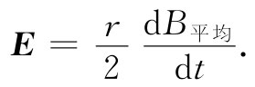
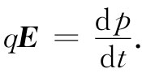
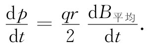
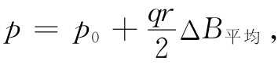
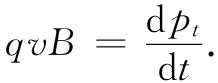
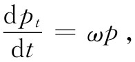
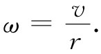
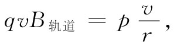

我们已说过，由变化磁场而产生的电动势即使在没有导体时也能存在，这就是说，没有导线也可以有电磁感应。我们仍然可以想象环绕空间中任意数学曲线的电动势，它被定义为E的切向分量绕该曲线的积分。法拉第定律讲，这个线积分等于穿过该闭合曲线磁通量的变化率的负值，即式（17.3）。
作为这种感生电场效应的例子，我们现在要考虑在变化磁场中电子的运动。想象有这么一个磁场，在一个平面上处处都指向其垂直方向，如图17-4所示。磁场是由电磁铁产生的，但其细节我们将不予考虑。对于这一例子我们将设想磁场对某个轴是对称的，也就是说，磁场强度将仅取决于离轴的距离。这一磁场也是随时间变化的。现在设想有一个电子在这磁场中正沿以轴为中心、半径恒定的圆周运动着（我们稍迟将看到，如何才能安排这一种运动）。由于变化着的磁场，因此就会有一个与电子轨道相切的场E，这将驱动电子环绕着该圆周运动。又由于对称性的缘故，这电场在圆周上各处将有相同的值。若电子轨道具有半径r，则E环绕其轨道的线积分将等于穿过该圆周的磁通量的变化率的负值。E的线积分恰好就是它的大小乘以圆的周长2πr。一般说来，这磁通量必须从一积分求得。这时，我们令B平均 代表该圆周内的平均磁场，于是通量为这平均磁场乘圆的面积，我们将有
图17-4 电子在一个轴对称的、正在增强的磁场中被加速
由于假定r为常数，所以E与一平均场的时间微商成正比：
 （17.4）
电子将感受到电力qE并将被加速。想起有关运动的相对论性的正确方程乃是动量的变化率正比于力，所以我们得
 （17.5）
对于已假定的圆周轨道，电子所受的电力始终指向其运动方向，因而它的总动量将按式（17.5）所给出的时间变化率增加。合并式（17.5）和（17.4），我们就可将动量变化率与平均磁场的变化率互相联系起来：
 （17.6）
对t进行积分，可得到电子的动量
 （17.7）
式中p0 为电子开始时的动量，而ΔB平均 则是B平均 接着发生的改变。电子感应加速器 ——一种用来把电子加速至高能的机器——的运行就是以这一概念为基础的。
为了详细看看电子感应加速器是怎样工作的，我们现在就必须探讨如何才能把电子约束在一个圆周上运动。我们曾在第1卷第11章中讨论过所涉及的原理。如果能够这样安排，使得在电子的轨道上有一磁场B，则将有一横向力qv×B，对于一个适当选择的B，这个力就能够使电子保持在所预定的轨道上运动。在电子感应加速器中，正是这一横向力引起了电子在一固定半径的圆周轨道上运动。通过再度应用关于运动的相对论性方程（不过这回却是关于力的横向分量的），我们便能找出在该轨道上的磁场强度应有多大。在这电子感应加速器中（见图17-4），由于B垂直于v，因而横向力为qvB。于是这个力就等于动量的横向分量pt 的变化率：
 （17.8）
当一粒子在圆周 上运动时，它的横向动量的变化率等于总动量的大小乘以转动角速度ω（根据第1卷第11章中的论证）：
 （17.9）
这里，由于是圆周运动，所以
 （17.10）
合并式（17.8）、（17.9）及（17.10）得
 （17.11）
式中B轨道 为半径r处的磁场。
当电子感应加速器运行时，电子的动量会按照式（17.7）正比于B平均 而增长。而若电子继续在其原来的圆周上运动，且当其动量增大时式（17.11）仍应继续维持正确，则B轨道 的值就必须随动量p成比例地增大。将式（17.11）与确定p的式（17.7）做比较，我们看到，在半径为r的轨道内 的平均磁场B平均 与在轨道上的磁场B轨道 必须有如下关系：
ΔB平均 =2ΔB轨道 。 （17.12）
电子感应加速器的正确运行要求：在轨道内的平均磁场的增长率比轨道处磁场本身的增长率要大一倍。在这种情况下，当粒子能量被感生电场增加时，轨道处的磁场以维持该粒子在圆周上运动所需要的比例增长。
电子感应加速器被用来加速电子，使其达到几千万乃至几亿电子伏的能量。然而，要把电子加速至远高于几亿电子伏的能量就变得不切合实际，这里有几个原因。原因之一是，要在该轨道内获得所需的高平均值磁场在实际上有困难。另一个原因则是，式（17.6）在能量高的情况下已不再正确，因为它并没有把由于粒子电磁辐射（即在第1卷第34章中所称为同步加速器辐射的）而损失的能量包括在内。由于这些原因，要把电子加速至更高能量——达到几十亿电子伏——就得采用另一种称为同步加速器 的机器来完成。